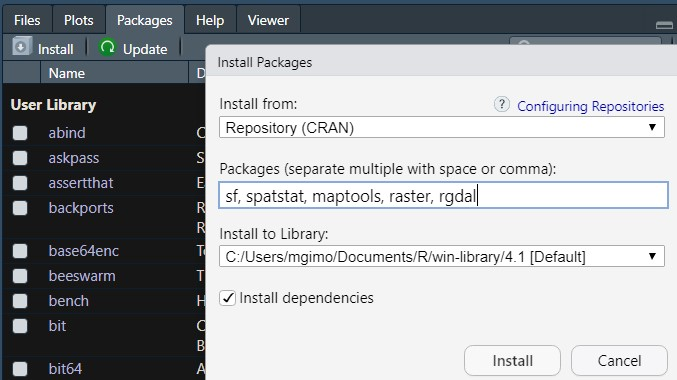
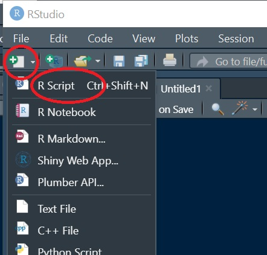
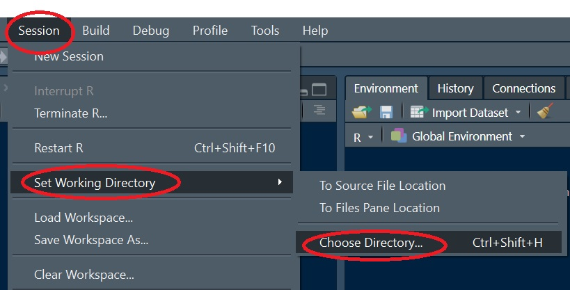
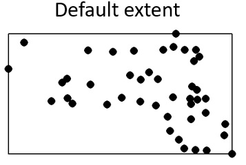
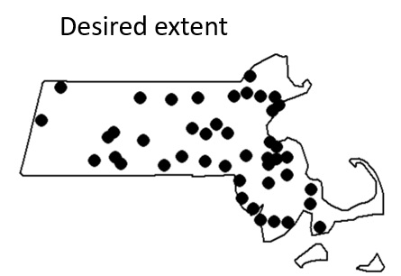
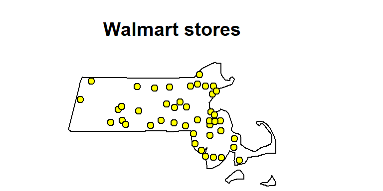
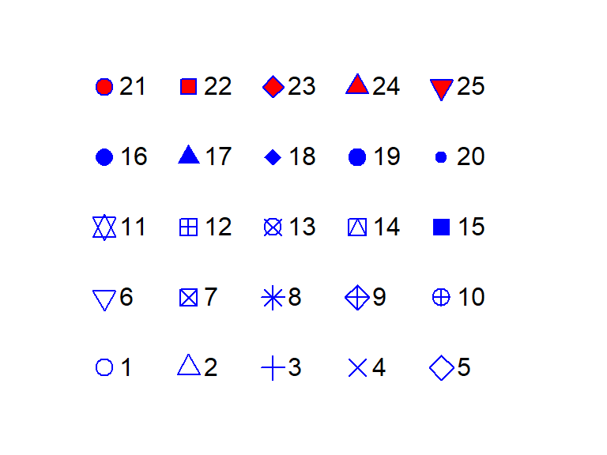
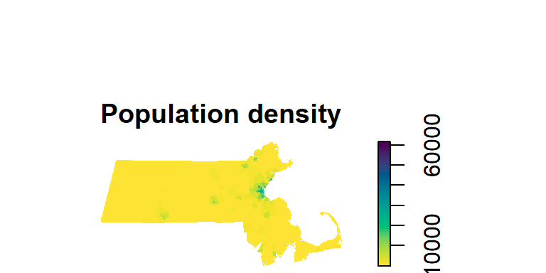
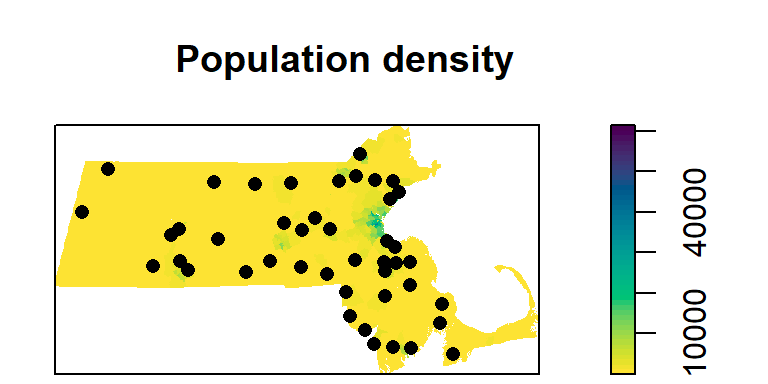

install.packages("sf")
install.packages("spatstat")
install.packages("raster")
install.packages("rgdal")
install.packages("maptools")Loading and visualizing data in R
Data for this tutorial can be downloaded from here. Don’t forget to unzip the files to a dedicated folder on your computer.
R is a data analysis environment. RStudio is a desktop interface to R (sometimes referred to as an integrated development environment-or IDE for short). Unlike most desktop environments you have been exposed to so far, R does not take instructions from a point-and-click environment, its instructions are provided by simple lines of text.
Setting up the R environment
Installing packages
This R session will make use of five packages: spatstat which has all of the spatial statistics tools used in this exercise; sf which is used to load the vector files; maptools which converts the raster format to an ‘im’ format recognized by spatstat; and raster which is used to manipulate raster files. You’ll also need to install rgdal to help the raster package read the .img raster file.
You can install packages in one of two ways: via command line or via the RStudio interface.
Option 1: Command line
Option 2: RStudio interface

If you are given the option to either have R compile some of the libraries or to accept the binaries, opt for the compilation option. This may slow down the package installation process somewhat.
Opening a new R script
If an empty R script file is not opened in RStudio open a new one now.

R scripts are usually saved using the .R extension (e.g. r_intro.R). Make sure to save this script on a regular basis as you add/modify pieces of code.
Setting an R session’s workspace
If you plan to read or write files from/to a directory, you might find it beneficial to explicitly define the R session’s project folder. To set a session’s working directory, go to Session >> Set Working Directory >> Choose Directory. In this example, you will want to set the working directory to the folder that houses the sample dataset.

Loading (activating) packages
Installing packages under your user profile is a one-time process, but to access the package contents in a current R session you must explicitly load its contents via the library function.
library(sf)
library(spatstat)
library(raster)
library(maptools) Note that you do not need to explicitly load the rgdal package since its functionality is used in the raster package.
Loading GIS data into R
Loading shapefiles
Note that R will recognize vector data models stored as shapefiles, but it will not recognize GIS files stored in geodatabases.
First, we will load the Massachusetts polygon shapefile into R and save the contents of that shapefile in an object called s2. Note the use of the assignment operator <- which assigns the output to its right to the object to its left. The name of the shapefile must end with the *.shp extension, but note that the function understands that the shapefile consists of multiple files.
s2 <- st_read("MA.shp")Reading layer `MA' from data source
`C:\Users\mgimond\Documents\Github\es214_support_tutorials\Getting_started_with_R\MA.shp'
using driver `ESRI Shapefile'
Simple feature collection with 1 feature and 4 fields
Geometry type: MULTIPOLYGON
Dimension: XY
Bounding box: xmin: 623157.2 ymin: 4577879 xmax: 922141 ymax: 4756659
Projected CRS: NAD83 / UTM zone 18NNOTE: if you get the error message
Error: Cannot open "MA.shp"; The file doesn't seem to exist., then you probably did not properly set the working directory (see earlier step) or you have a syntax error in the filename.
R can store spatial objects in different internal formats. spatstat’s functions require that a specific spatial format be used. The MA states layer will be used to define the study extent which will require that it be stored as an owin formatted object. We will make use of the as.owin function to convert the s2 object to an owin object.
w <- as.owin(s2)The coordinate unit associated with the spatial object inherits the underlying coordinate system’s map units–meters in our example. Such small units may make it difficult to interpret the output of some analyses given that some analyses may generate very small values (i.e. density based analyses) or very large values (i.e. distance based analyses). We will therefore convert the map units from meters to kilometers using the rescale() function. Note that 1000 m = 1 km.
w.km <- rescale(w, 1000)The second parameter in the rescale() function, 1000, tells R to divide the planar unit by 1000.
Next we will load the Walmart stores shapefile (Walmarts.shp) using the same functions, but instead of storing the shapefile as a polygon boundary, we will convert the point shapefile to a ppp formatted point object.
s1 <- st_read("Walmarts.shp") Reading layer `Walmarts' from data source
`C:\Users\mgimond\Documents\Github\es214_support_tutorials\Getting_started_with_R\Walmarts.shp'
using driver `ESRI Shapefile'
Simple feature collection with 44 features and 40 fields
Geometry type: POINT
Dimension: XY
Bounding box: xmin: 640627.2 ymin: 4614803 xmax: 869353.2 ymax: 4738331
Projected CRS: NAD83 / UTM zone 18Np <- as.ppp(s1) # creates a ppp objectWarning in as.ppp.sf(s1): only first attribute column is used for marksp.km <- rescale(p, 1000)By default, R will adopt a rectangular extent for the point data.

Given that we will be defining the extent to match that of the Massachusetts boundaries, we will need to explicitly define the study extent for the point object.

Window(p.km) <- w.kmThere is one more thing that we will need to do that will make the data behave with spatstats tools: remove the layer’s attribute information (point attributes are also known as marks in the point pattern analysis world). The point attributes will not be needed here since our interest is in the pattern generated by the points and not by their attribute values.
marks(p.km) <- NULLLoading Raster Files
Next, we will load the population density raster file pop_sqmile.img using the raster function from the raster package, than we’ll convert it to an im object recognized by spatstat and name the object r.km once re-scaled.
img <- raster("./pop_sqmile.img") # Creates a raster object
r <- as.im(img) # Convert r object to an im object
r.km <- rescale(r, 1000)Visualizing Spatial Objects
We can plot the raster and overlay it with the point layer. Several plotting options are available including the base plot function which will be used in this tutorial). However, there are many R packages that will help improve the “look” of a map including tmap and ggplot2.
In the following code chunk, we will plot the point data. We’ll assign a yellow fill color to the point symbol. The point symbol type is defined by the pch = 21 parameter.
plot(p.km, pch = 21, bg = "yellow", main = "Walmart stores")
Point symbol types are defined by a number. The above point symbol is number 21. Other point symbols available in R are shown below:

To plot a raster, you can use the image function (as well as the plot function). Here, we’ll adopt a built-in color scheme using the hcl.colors function.
image(r.km, main = "Population density", col = hcl.colors(50, rev = TRUE))
In the following chunk of code, we will plot both the raster and point layers. To add a “layer” to an existing map, include the add = TRUE parameter.
image(r.km, main = "Population density", col = hcl.colors(50, rev = TRUE))
plot(p.km, pch = 16, add = TRUE)